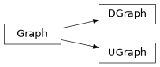

Common methods
The package supports both directed (prefix D) and undirected graphs (prefix U), and the classes for these
share a common interface.
The graph classes represent a single graph, either directed or undirected, and they share Graph:

The vertices of both kinds of graph are Vertex objects. A vertex has
no direction of its own: the graph it belongs to decides how an edge is recorded
in the edge lists of its vertices.
Edges are represented by the Edge class, which is used by both directed and undirected graphs.
The graph classes share almost their entire interface, defined once on their
common base class Graph. This section documents that shared interface
by task rather than by class; see Construction and basic usage for the DGraph
and UGraph classes and Edges & Vertices for vertices and edges.
The following sections describe the common methods.